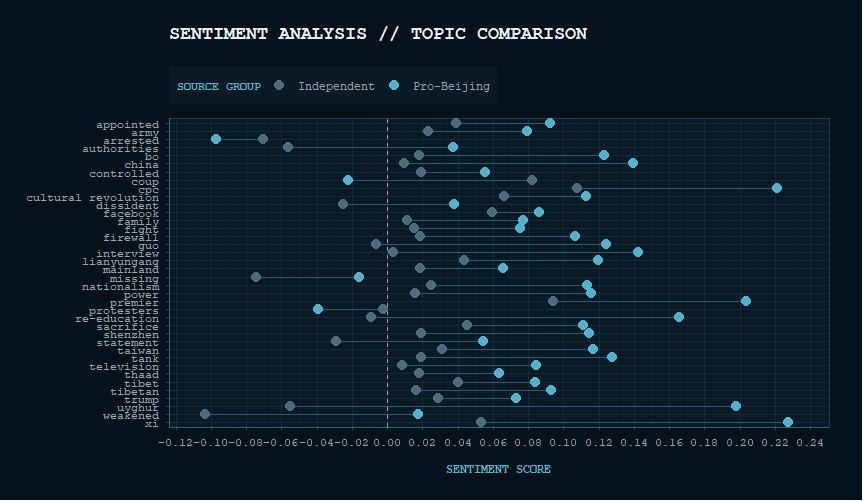
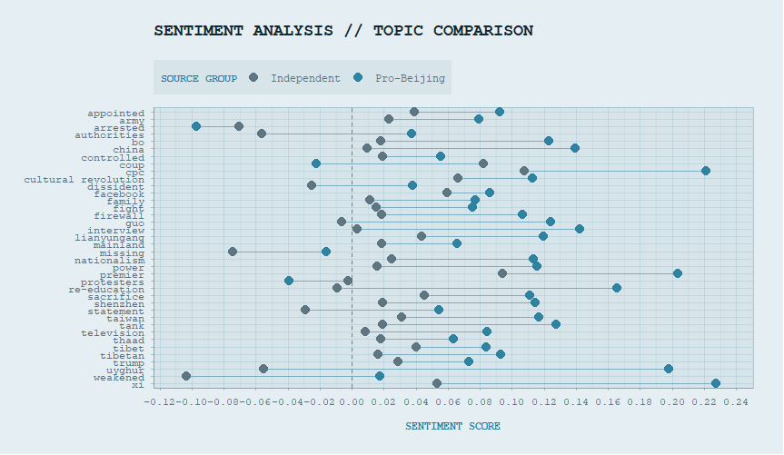

University of Mannheim — Department of Political Science - Faculty of Quantitative Methods
1. Sensitive Keyword Usage: Contrary to the assumption that state media completely avoids taboo topics, pro-Beijing outlets discuss sensitive subjects just as frequently as independent outlets. However, they neutralise politically charged terms (e.g., using "incident" instead of "crackdown") and focus heavily on institutional or party-specific language.
2. Reframing Narratives: While independent media consistently reports on sensitive topics with negative or critical sentiment, pro-Beijing sources recast these same topics significantly more positively to emphasise stability, order, and economic growth.


How do autocratic regimes use
international, English-language media to manage information
and handle sensitive or harmful topics? I
analysed over 20,000 newspaper articles from
2017 using LexisNexis, comparing five pro-Beijing outlets
against five independent Western outlets.
Historically, authoritarian regimes relied on total
censorship or limited television monopolies to control
public opinion. However, the rise of the internet and
social media made total
suppression inefficient and vulnerable, as seen during
the Arab Spring. Consequently, modern regimes shift
toward strategies of obstruction, flooding, and
distraction. Rather than completely avoiding sensitive
terms, state-aligned state engages with these words directly,
securing visibility in global search engines and social
media feeds, preventing opponents from holding a vocabulary monopoly.
Flooding & Crowding Out: Rather than ignoring controversial events (which creates an information vacuum), pro-Beijing media immediately adopt sensitive keywords to generate a high volume of neutral or positive reports.
Algorithmic White Noise: By mass-producing pro-state content containing these keywords, state media competes on global search engines and social media feeds, making it harder for international readers to find critical perspectives and diluting the opposition's message.
International Legitimacy: This strategy
targets global actors (investors, diplomats,
international audiences) to build soft power,
counter exile groups, and promote a performance-based
narrative of regional stability.
Across almost
all thematic subsets, pro-Beijing outlets systematically
recast negative, scandalous, or critical international
events into positive, sinophilic narratives of order,
souvereignty, and state stability.
Disclaimer: The raw dataset used for this project was synthesized and adapted from public news article records for analytical purposes.
↓ Download .CSV ↓ Download .RDS (R)Download the source script used for processing keywords and analysis.
↓ Download Code (.R)